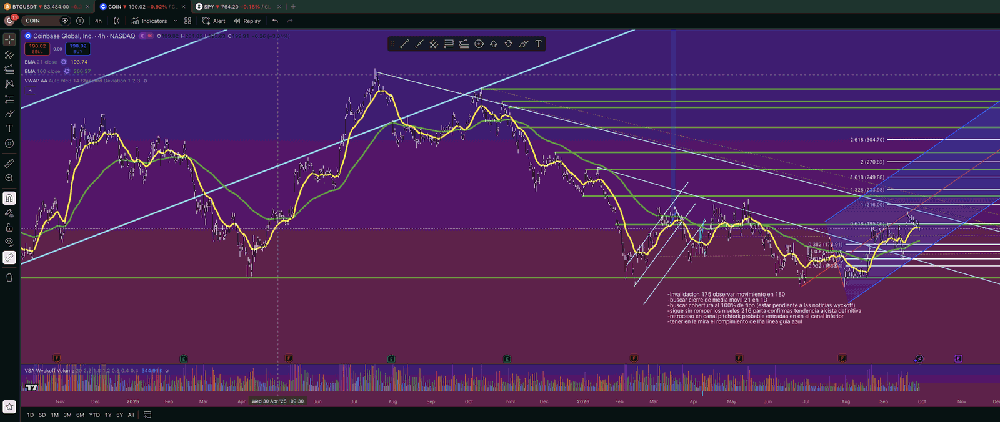
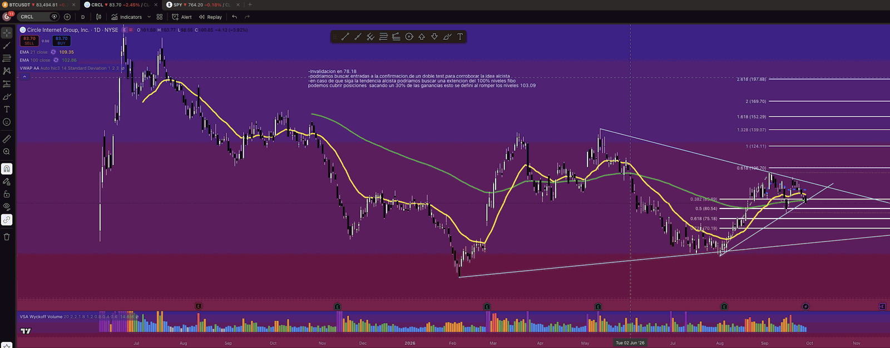

Cuatro activos, una exposición
Aviso Este documento no es asesoría financiera. Es un marco de análisis técnico para la toma de decisiones propias.
01
Conclusión principal
Los cuatro activos son, en la práctica, una sola exposición a Bitcoin: el sesgo de fondo es alcista, pero ninguno está hoy en zona de entrada óptima y todos esperan un retroceso.
Bitcoin fue rechazado en ~87,300, que resulta ser la extensión de 61.8% del trazo vigente, y cotiza en ~83,700. MSTR cotiza pegado a su propia extensión de 61.8% y COIN quedó justo debajo de la suya: ninguno de los dos ha confirmado la ruptura. CRCL perdió sus medias y se acerca a su invalidación.
El plan del memo anterior sigue vigente. Primero corrige Bitcoin; después se carga exposición en las acciones ligadas. Comprar las tres hoy, a la vez, es tomar una sola posición grande en BTC al peor precio de las tres.
Bitcoin en septiembre · 23 de septiembre de 2026. Aquel memo pedía una corrección de 8–10% hacia 78,570–81,200 con invalidación en 75,000. El rechazo de esta semana en 87,300 confirmó el escenario base.
02
Bitcoin
El rechazo en 87,300 confirma el escenario base del memo anterior: la corrección hacia 78,570–80,316 sigue siendo el plan.
La tesis
Lectura independiente
La extensión está anclada en 62,500 → 82,300 → 75,040. Con esos puntos, el 61.8% cae en ~87,290, exactamente donde se rechazó el precio. El propio mercado validó el trazo.
El 38.2% cae en ~82,610, así que la entrada en 82,200 tiene sentido técnico y coincide con el nivel de 82,487 marcado en la gráfica.
Cómo entrar. 82,200 queda por encima de la zona de corrección de 8–10%, así que sirve como entrada parcial —un tercio—, no como entrada completa: la principal se queda en 78,570–80,316. Y romper 80,400 no lleva directo a 75,000; primero entra en la zona de recompra. El detonante para buscar 75,000 es un cierre de 4H por debajo de 78,500.

Mapa de niveles
| Nivel | Referencia | Uso |
|---|---|---|
| 126,915 | Extensión 261.8% | Objetivo de largo plazo |
| 107,100 | Extensión 161.8% | Segundo objetivo |
| 94,855 | Extensión 100% | Primer objetivo tras romper 87,300 |
| ~87,300 | Extensión 61.8% | Resistencia confirmada |
| 82,200–82,610 Precio ~83,700 | Extensión 38.2% | Entrada parcial |
| 78,570–80,316 Entrada | Corrección 8–10% | Entrada principal |
| 74,875–75,000 Invalidación | Retroceso 38.2% | Invalidación de la estructura |
| 72,520 / 70,160 | Retroceso 50% / 61.8% | Objetivos si se pierde 75,000 |
El contrato
El contrato de la gráfica ya es el de octubre (BTCV2026), así que el roll está resuelto y no hay que rehacer los niveles esta semana.
03
MSTR · Strategy
La ruptura de la línea guía bajista es real, pero comprar en 154.67 con invalidación en 125 da mala relación riesgo/beneficio. La entrada está en el retest.
La tesis
Lectura independiente
La extensión, con base en ~121.4, pone el 61.8% en 155.81, y el precio cotiza pegado a ese nivel: está sobre él, no por encima con holgura. La EMA de 21 está en ~144.1 y la de 100 en ~130.1, así que el retest de 130 coincide con la EMA de 100. Es la mejor confluencia de la gráfica.
El retroceso del último impulso pone el 50% en 146.41 y el 61.8% en 140.97. Con la EMA de 21 en medio, esa franja es la zona de aumento de exposición.
El problema del precio actual
Desde 154.67, con stop en 125, para ganar ~14% hasta 177.
Desde 130, con el mismo stop, para ganar ~36% hasta 177.
Es la misma tesis, el mismo objetivo y el mismo stop. Lo único que cambia es el precio de entrada, y con él la operación entera.
Relación con BTC. MSTR se mueve con más beta que Bitcoin, típicamente entre 1.5 y 2 veces. Una caída de BTC de 8–10% hacia 78,500–80,300 es coherente con que MSTR visite 130–140. Ambos planes apuntan al mismo momento de entrada.

Mapa de niveles
| Nivel | Referencia | Uso |
|---|---|---|
| 267.23 | Extensión 261.8% | Objetivo de largo plazo |
| 232.80 | Extensión 200% | Tercer objetivo |
| 211.52 | Extensión 161.8% | Segundo objetivo |
| 195.36 | Extensión 132.8% | Confirmación alcista total al romper y testear |
| 177.09 | Extensión 100% | Primer objetivo |
| 155.81 Precio 154.67 | Extensión 61.8% | Soporte frágil: el precio está sobre él |
| 151.86 | Retroceso 38.2% del último impulso | Primer soporte |
| 140.97–146.41 Parcial | Retroceso 50%–61.8% y EMA 21 (~144.1) | Entrada parcial |
| 135.80 | Retroceso 72.8% del último impulso | Último soporte antes del retest |
| ~130.10 Entrada | EMA 100 y retest de la línea guía | Entrada principal |
| 125 Invalidación | Invalidación | Salida |
| 123.64 | Retroceso 38.2% del swing mayor | Primer soporte tras invalidar |
| 117.07 / 110.49 | Retroceso 50% / 61.8% del swing mayor | Objetivos si se pierde 125 |
Entrada parcial en 141–146, principal en 130–133, stop por debajo de 125.
Toma de ganancias parcial en 177 y en 195. Si 195 se rompe y se sostiene, dejar correr el remanente hacia 211.
04
COIN · Coinbase
COIN está debajo de una capa densa de resistencias entre 195 y 216. La tendencia alcista no se confirma hasta romper 216.
La tesis
Lectura independiente
Entre 195 y 216 se acumulan cuatro resistencias: la extensión de 61.8% (195.06), la EMA de 100 en 4H (~200.4), la línea bajista desde el máximo de 2025 y la extensión de 100% (216). El precio está además debajo de la EMA de 21 en 4H (~193.7), así que el impulso de corto plazo es débil.
La invalidación en 175 coincide casi exacto con el retroceso de 38.2% (174.91). Es un nivel bien elegido: el mismo punto sirve de tesis y de salida.
Riesgo y beneficio
Arriesga ~8% con stop en 175 para ganar ~14% hasta 216.
La misma operación esperando el soporte horizontal, donde pasa el canal inferior del tridente.
Sobre la cobertura en 216. Es coherente, porque 216 es resistencia hasta demostrar lo contrario. Pero si rompe con volumen y cierra en diario por encima, la cobertura debe levantarse: ahí 216 deja de ser techo y pasa a ser soporte.

Mapa de niveles
| Nivel | Referencia | Uso |
|---|---|---|
| 304.70 | Extensión 261.8% | Objetivo de largo plazo |
| 270.82 | Extensión 200% | Tercer objetivo |
| 249.88 | Extensión 161.8% | Segundo objetivo |
| 233.98 | Extensión 132.8% | Primer objetivo tras romper 216 |
| 216.00 Objetivo | Extensión 100% | Confirmación alcista y zona de cobertura |
| 195–200 Precio 190.02 | Extensión 61.8% y EMA 100 (4H) | Primera resistencia |
| 177.9–180 Entrada | Soporte horizontal | Zona de entrada |
| 175 Invalidación | Invalidación | Salida |
| 174.91 | Retroceso 38.2% | Coincide con la invalidación |
| 168.44 / 161.98 | Retroceso 50% / 61.8% | Objetivos bajistas |
| 146.15 | Soporte mayor | Base del rango de 2026 |
La gráfica marca el reporte trimestral alrededor de finales de octubre. Conviene no llegar a esa fecha con la posición completa y sin cobertura. Hay que verificar la fecha exacta antes de entrar.
05
CRCL · Circle
CRCL está en un triángulo que se comprime y acaba de perder sus medias. Esperar un doble test es lo correcto: la invalidación está solo ~7% abajo.
La tesis
Lectura independiente
El retroceso está trazado sobre el swing de ~57.9 a 103.09, y la extensión tiene base en ~78.5. Por eso la invalidación en 78.18 está bien colocada: si se pierde, el patrón de extensión deja de ser válido. No es un nivel arbitrario, es el punto donde el trazo se cae.
El precio ya cayó debajo del 38.2% (85.89) y de las EMAs de 21 y 100 (~88.7 y ~85.0), así que el impulso de corto plazo es negativo.
Estructura
La línea bajista desde el máximo de mayo y la alcista desde el mínimo de julio forman un triángulo simétrico cerca de su vértice. Eso suele resolverse con un movimiento fuerte en cualquier dirección. El doble test en 80.54 —el retroceso de 50%— sería la señal de que la ruptura buena es hacia arriba.
Sobre el 30% en 103.09. Al romper 103.09 se toma 30% de ganancias y el resto queda corriendo hacia 124.11. Tiene lógica: 103.09 es el máximo del swing y todavía quedan dos resistencias antes del 100%, 106.70 y la línea bajista.

Mapa de niveles
| Nivel | Referencia | Uso |
|---|---|---|
| 197.88 | Extensión 261.8% | Objetivo de largo plazo |
| 152.29 | Extensión 161.8% | Tercer objetivo |
| 139.07 | Extensión 132.8% | Segundo objetivo |
| 124.11 | Extensión 100% | Objetivo principal |
| 106.70 | Extensión 61.8% | Resistencia |
| 103.09 Objetivo | Máximo del swing | Toma de 30% al romperlo |
| 85.0–88.7 Precio 83.70 | EMAs de 100 y 21 | Resistencia a recuperar |
| 85.89 | Retroceso 38.2% | Perdido |
| 80.54 Entrada | Retroceso 50% | Zona de doble test |
| 78.18 Invalidación | Base de la extensión | Salida |
| 75.18 / 70.19 | Retroceso 61.8% / 72.8% | Objetivos bajistas |
CRCL depende menos de Bitcoin y más de las tasas de interés y la regulación de stablecoins, porque buena parte de su ingreso viene de los intereses de sus reservas.
Eso la vuelve una diversificación parcial del bloque, no una cobertura. Si BTC cae, CRCL puede caer también; solo que por motivos propios.
06
Riesgo de cartera
La regla más importante de este memo: Bitcoin decide primero, y las acciones ligadas se compran después de que BTC confirme su zona de recompra.
Correlación. BTC, MSTR y COIN se mueven casi juntos, y MSTR con más beta. Tener las tres posiciones completas equivale a una sola posición grande en Bitcoin, con la ilusión de estar diversificado. Conviene fijar un límite de riesgo total para el bloque —la suma de las pérdidas posibles hasta cada invalidación— y no solo un límite por operación.
Secuencia sugerida
- BTC toca 78,570–80,316 y muestra rechazo: activar entradas en MSTR (130–146) y COIN (175–180).
- BTC cierra en 4H por debajo de 78,500: no abrir nuevas posiciones y cubrir parcialmente las existentes.
- BTC cierra en diario por debajo de 75,000: es muy probable que MSTR pierda 125 y COIN pierda 175 al mismo tiempo. Salida o cobertura completa del bloque.
- CRCL: se gestiona aparte, con su propio doble test, porque depende menos de BTC.
Escenario alcista inmediato. Si BTC rompe 87,300 sin corregir, MSTR probablemente buscaría 177 y COIN retaría 216. En ese caso las entradas serían en los retests de las rupturas, no persiguiendo el precio. Quedarse fuera de una continuación es un costo aceptable; entrar tarde y sin nivel de referencia, no.
07
Invalidaciones y calendario
Cada activo tiene su propia salida, pero tres de las cuatro se activan casi al mismo tiempo. Esa es la verdadera exposición.
Invalida la estructura alcista intermedia y dispara al resto del bloque.
Debajo de 125, los siguientes soportes son 123.64 y luego 117.07.
Coincide con el retroceso de 38.2% en 174.91. Después, 168.44 y 161.98.
Debajo de ahí el patrón de extensión deja de ser válido. Después, 75.18 y 70.19.
Calendario. Los reportes trimestrales de COIN, MSTR y CRCL suelen caer entre finales de octubre y mediados de noviembre, y las gráficas marcan fechas en ese rango. Hay que verificar las fechas exactas antes de entrar y no llegar a un reporte con la posición completa y sin cobertura.
Riesgo externo. Los datos de inflación y las decisiones de la Fed pueden mover el bloque entero a la vez y dominar sobre cualquier nivel técnico. El plan técnico dice dónde entrar y dónde salir; no dice cuándo va a hablar la Fed.
Cuatro gráficas, una sola decisión.
Este memo empezó como cuatro análisis separados y terminó siendo uno solo. Cuando los pones lado a lado, las cuatro invalidaciones se activan casi el mismo día, y eso cambia por completo el tamaño que puedes tomar.
La parte incómoda de esta semana es que la tesis está bien y el precio está mal. No hay nada que hacer con eso más que esperar el nivel. Un buen plan en mal precio sigue siendo una mala operación.
Si el mercado no llega a las zonas de entrada, no pasa nada: el plan también contempla quedarse fuera. Nos leemos en el siguiente memo. Recibe un saludo cordial,